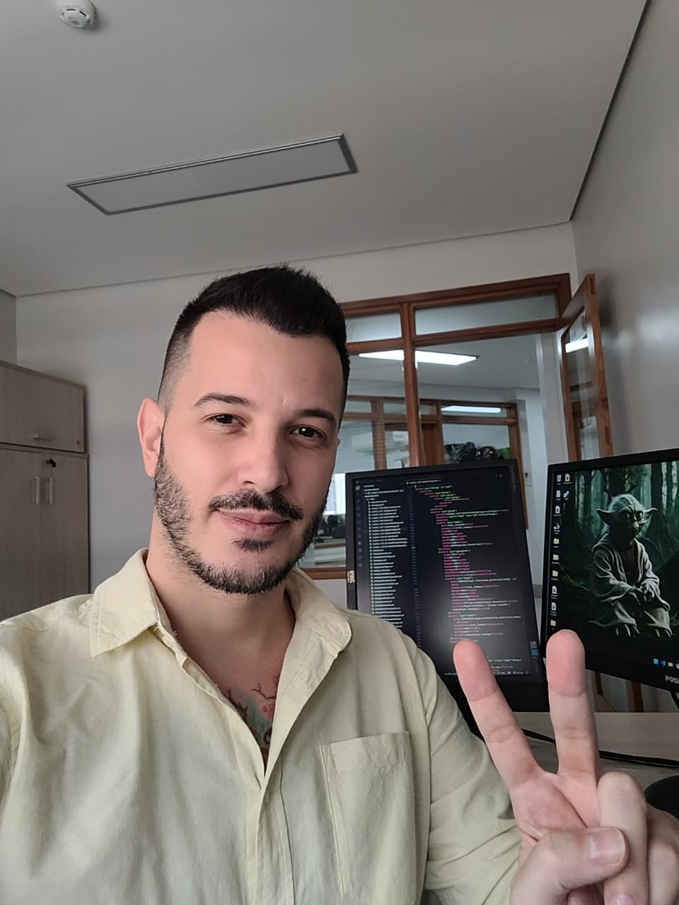

Meu currículo animado em 2 minutos
Sou Saulo Hugo Rossi, formado em Direito (UFMG), Analise em Desenvolvimento de Sistemas (Newton Paiva) e concluindo Ciências da Computação.
Ops! Mentira, sou este! Informal e sempre animado!
Sempre curioso e apaixonado por TI, tinha o desenvolvimento como hobbie:

Em 2019 comprei a ideia de criar um sistema para a Prefeitura de Belo Horizonte que permitisse a digitalização dos processos de papéis.
Foi então que percebi 🤔💡... com minha sólida experiência jurídica, adquiri uma visão analítica de processos e a habilidade para desenvolver soluções de TI eficientes 🦸🏻♂️, passando a atuar também como analista de sistemas.
Simplificando: este é o fluxo de um sistema que criei com 3 colegas, onde julgamos mais de 20.000 processos.
Click on me 👆🏻!
Em 2020 veio o maior desafio: a pandemia!
Junto com uma colega, construímos um fluxo bem maior, e com uma equipe contratada, trabalhamos para implementar os seguintes serviços na plataforma SYDLE ONE:
Yep! Toda a descrição, material, esclarecimentos e links destes serviços foi criado por mim.
O processo que era digitalizado, virou digital.
O fluxo cresceu, ganhou subfluxo e ficou mais claro. Não se engane pelo tamanho, sou apaixonado pela simplificação, mas simplificar não significa reduzir!
Etapas foram automatizadas e timers foram criados. Isso reduziu minha equipe pela metade e o prazo médio de julgamento caiu de 90 para 30 dias.
A imagem "fluxao.png", com opção de zoom. Alguns trechos foram ocultados por questões de privacidade e ética profissional.
Finalmente, em 2022, chegou a hora de virar Dev com diplomas, certificados e cursos!
Cursei Análise em Desenvolvimento de Sistemas (Newton Paiva) e, já no começo, 🏃🏻♀️➡️ acelerei 🏃🏻♀️➡️ para participar de grupo de pesquisas e diversos cursos, de hardware, Python (básico ao avançado), JavaScript, dados, CSS... com uma sede enorme em aprender rápido.

Na faculdade, sempre me destaquei pelo backend, mas eventualmente polia o CSS e HTML.
Em 2024 eu devo ter tido um surto 😅 porque eu comecei minha terceira graduação, rsrsrs: Ciências da Computação! Na verdade, eu queria aprofundar mais.
Em Jan/2025, a enorme sorte:
Me juntei a um Mestre Jedi, e enquanto padawan, comecei como estagiário/assistente de um dev sênior em Python excepcional, que me ajuda a praticar metodologias ágeis (Scrum, Kanban) e me ensina muito sobre otimização de código, TDD, pytest, manipulação de dados, APIs (Flask/FastAPI) e Docker.
Eu não posso postar meu código desenvolvido com o Mestre, em razão de sigilo e ética, mas segue uma breve demonstração dos meus códigos, para ter um vislumbre como minha cabeça funciona 🤯.
Eiii... Vc clicou ali? 👆🏻
Como sou inquieto...
Tenho sempre projetos em andamento e alguns que nunca acabam 🙃, porque sempre estou acrescentando funcionalidades BetterFlix, integrando APIs para reviews, trailers e notas. E até descobri que gosto e sou bom no front-end 😅!
Já este playground Managing-vacation-and-hybrid-work, possui tantas funcionalidades e é tão útil, que outro dia fui acrescentar um funcionário através do código e me dei conta de que o site já possuía esta funcionalidade em sua interface 🫠!
Minha paixão pela tecnologia não se esgotam nos códigos, gosto de modificar hardware, otimizar todos os sistemas que utilizo, realizar automações desde o android, windows, alexa.
A inteligência artificial pode apoiar, mas a criatividade é essencialmente humana e é a curiosidade, somada à prática, que a nutre. Sou movido pela curiosidade, busco sempre entregar o meu melhor e acredito que há sempre algo novo a aprender. Minha paixão pela lógica da programação e por desafios me impulsa a querer sempre chegar mais longe.
Skills
Linguagens: Python, JavaScript (ES6+), HTML, CSS, SQL
Frameworks/Bibliotecas: FastAPI, Flask, React, Node.js, Express
Banco de Dados: MySQL, SQLite, Firestone (Firebase)
Ferramentas: Git, GitHub, Docker, Docker Compose, Grafana
Outros: REST APIs, GraphQL, pytest (testes), Pandas, NLP (coleta e análise de tweets), CI/CD (GitHub Actions), observability
Este sou eu!
Se vc chegou até aqui, pode abrir seu presente!